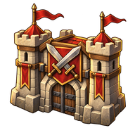

Distinguer les fonctionnalités prévues, les idées à explorer et douze tâches concrètes pour faire avancer le jeu.
Comprendre ce que cela implique
Cette page est un carnet de conception et une proposition de priorités. Elle distingue les éléments déjà documentés, ceux qui restent à concevoir et les suggestions nouvelles ; aucune de ces listes ne rend une fonctionnalité disponible.
La todo list commence par une aventure complète et fiable, puis un socle de coopération, avant les extensions de combat et de préparation. Chaque tâche possède un résultat vérifiable ; les priorités restent à arbitrer selon les essais.


Dans cet article
Détails de référence
Texte de référence mis en forme et conservé dans l’historique de cet article. Les paragraphes datés peuvent décrire une évolution ou une étape antérieure.
Cette page rassemble les pistes du projet au 21 octobre 2026. Elle sépare ce qui est déjà décrit et reste à raccorder, les idées de scénarios à concevoir et de nouvelles propositions à discuter. Les priorités ci-dessous sont une proposition d’ordre de travail, sans calendrier ni engagement de réalisation.
Comment lire cette page
À implémenter : une intention ou une spécification existe ; elle ne constitue pas une fonctionnalité disponible.
À concevoir : le principe est identifié, mais ses règles et ses conséquences restent à définir.
Proposition nouvelle : une suggestion pour alimenter la réflexion, sans décision prise.
À vérifier : un module ou un prototype existe ; son intégration au parcours actuel doit être confirmée avant d’annoncer sa disponibilité.
Les cases de la todo list servent au suivi documentaire. Une tâche ne passe à « terminé » qu’après vérification dans le moteur, tests et mise à jour du wiki. Cette page n’active aucun contenu et ne modifie aucune règle du jeu.
Fonctionnalités déjà envisagées
Quêtes réellement coopératives — à implémenter
L’atelier permet de préparer des modes ouverts, avec leader ou groupe physique, et des mécaniques de simultanéité, relais et contribution collective. Le moteur qui exécute ces nouvelles règles reste à raccorder. Le point essentiel sera de définir qui participe, qui peut rejoindre en cours de route et ce qui arrive lorsqu’un joueur part ou se déconnecte.
Le socle à construire doit gérer les preuves de présence, l’avancement partagé, les contributions et l’attribution unique des récompenses. Un prototype de fort d’équipe figure dans les notes historiques : il doit être audité et réutilisé si possible, pas réécrit ni présenté comme la preuve que tous les nouveaux modes fonctionnent.
Conseil et événements stratégiques — à implémenter
Réunir les joueurs, leur présenter plusieurs stratégies, recueillir leurs votes, puis ouvrir des missions selon le résultat. Les modèles de l’atelier prévoient notamment au moins trois stratégies, des défis, des coûts, des positions et des phases. Ces données de conception ne sont pas encore des événements exécutés en partie.
À décider avant le développement : quorum, égalités, abstentions, échéances, gestion d’un chef absent et conséquences d’une stratégie impossible à financer. Les invitations par messager autonome devront avoir un état sauvegardé et une issue définie si le destinataire est indisponible.
Combat à distance et pouvoirs de carte — à concevoir puis implémenter
Le concept envisage une projection du Mage qui combat sans engager son corps réel, une embuscade spécialisée, une Volée de flèches et un Tir de précision de l’Éclaireur. Il reste à fixer les portées, les dégâts, les recharges, les coûts en Commandement et les conséquences de victoire ou de destruction de la projection.
Le voyage astral d’interaction existe déjà : il ne faut pas lui attribuer les effets de ce futur mode. Le concept ne prévoit pas de mana. Sa compatibilité avec le budget d’ordres du combat tactique doit être explicitée avant intégration.
Monde, lieux de quête et préparation — à compléter
Associer les besoins des quêtes aux lieux compatibles du monde : fonction, faction, ressource, distance et nécessité de lieux distincts.
Créer les indices et lieux spécifiques au bon moment, puis traiter leur retrait et leur sauvegarde. Les prospecteurs perdus constituent un cas concret à débloquer dans le monde initial minimal.
Préparer des terrains types et des variantes de taille, avec des indications de capacité et des erreurs de placement compréhensibles.
Définir la validation QR temporaire par visite et le futur parcours intérieur. Le parcours IRL actuel conserve ses validations GPS ; un scan n’est pas une récompense.
Apparences et groupes autonomes — à raccorder ou à concevoir
Les variantes de héros disposent déjà de portraits et de planches de marche. Leur sélection en partie reste à raccorder : l’apparence choisie ne doit pas modifier la classe, les statistiques ou les permissions.
Les groupes de faune ont aussi des visuels. Cela ne définit pas leurs troupes, leurs statistiques ou leur comportement. Une chasse, une fuite ou un rabattage nécessitent donc leurs propres règles avant de devenir des missions jouables.
Todo list proposée
P1 — Rendre une aventure complète réalisable
☐ T01 — Vérifier la disponibilité réelle des contenus. Distinguer catalogue, prototype isolé, outil d’édition et partie jouable. Terminé quand chaque contenu retenu a un parcours de lancement et un statut documentés.
☐ T02 — Choisir une seule mission pilote. Cadrer son objectif, ses lieux, ses participants et sa fin. Proposition : débloquer le parcours des prospecteurs avant d’ajouter un nouveau scénario long. Terminé quand le périmètre et les dépendances sont décrits sans ambiguïté.
☐ T03 — Raccorder les créations de lieux nécessaires au pilote. Réutiliser les mécanismes de création et d’apparition existants. Terminé quand une nouvelle partie, une reprise et un refus de placement restent cohérents, sans doublons.
☐ T04 — Tester le parcours de bout en bout. Vérifier acceptation, objectifs, transport, réussite, abandon et reprise en GPS comme sur carte fictive. Terminé quand les récompenses restent uniques, y compris après reconnexion.
P2 — Construire un socle de coopération réutilisable
☐ T05 — Écrire le contrat de participation. Fixer admission, leader, présence, départs et déconnexions. Dépend de T01. Terminé quand chaque cas possède un résultat attendu, sans décision locale du navigateur.
☐ T06 — Implémenter une première mécanique collective. Choisir contribution de ressources ou relais avant de traiter tous les modes. Dépend de T05. Terminé quand deux joueurs peuvent agir sans double consommation ni double récompense.
☐ T07 — Adapter une quête d’équipe existante ou créer un petit pilote. Auditer d’abord le fort d’équipe. Dépend de T06. Terminé quand le parcours fonctionne avec l’effectif prévu et gère un participant indisponible.
☐ T08 — Raccorder un événement stratégique minimal. Fixer d’abord vote, quorum, égalité et coût. Dépend de T05 et d’un pilote collectif stable. Terminé quand l’issue sauvegardée ouvre les bonnes missions une seule fois.
P3 — Étendre et équilibrer
☐ T09 — Finaliser la fiche du combat à distance. Définir les valeurs encore ouvertes, les cibles et les effets sur le corps réel. Terminé quand les cas limites peuvent être décrits sous forme de tests ; implémenter ensuite dans des modules dédiés.
☐ T10 — Raccorder le choix d’apparence. Conserver le choix dans l’état officiel et les sauvegardes. Terminé quand le bon portrait et le bon sprite apparaissent pour les joueurs autorisés, sans changement des caractéristiques.
☐ T11 — Choisir la prochaine amélioration de préparation. Capacité du terrain, terrains types ou validation QR par visite : traiter un sujet à la fois. Terminé quand son contrat GPS/simulation/intérieur est explicite et vérifié.
☐ T12 — Organiser un essai terrain et ajuster. Observer durée des déplacements, clarté des objectifs, charge de lecture et utilité de chaque rôle. Terminé quand les observations sont consignées et les corrections prioritaires ajoutées à cette liste.
Cet ordre privilégie une petite aventure fiable avant plusieurs nouveaux systèmes. Il peut être modifié selon les essais et les décisions du projet.
Idées de quêtes déjà notées
Ces pistes proviennent des notes de quêtes collectives du projet. Elles restent à concevoir, sauf les éléments déjà prototypés explicitement mentionnés plus haut.
| Idée | Expérience recherchée | Question à résoudre |
|---|---|---|
| Fort pour le royaume | Répartir transport, construction et garnison. | Quelle intégration du prototype dans le moteur actuel ? |
| Relais de toute l’équipe | Faire intervenir successivement chaque participant. | Comment remplacer un joueur absent sans bloquer la quête ? |
| Sceaux au temple | Réunir des porteurs d’objets au même endroit. | Quelle fenêtre de simultanéité et quelle preuve de présence ? |
| Préparation d’un siège | Livrer les moyens qui permettront un assaut. | Quels effets de préparation appliquer à la bataille ? |
| Infiltration et diversion | Donner des tâches complémentaires aux participants. | Comment coordonner les actions et gérer une diversion ratée ? |
| Évacuation collective | Répartir défense, construction et ravitaillement. | Comment adapter un contenu historique sans réactiver ses dépendances retirées ? |
| Chasse du roi | Se positionner pour rabattre puis poursuivre le gibier. | Quels comportements de faune et quelles validations de position ? |
| Convoi à la croisée des chemins | Coordonner plusieurs rôles autour d’un convoi précieux. | Quelles issues si le convoi est intercepté ou perdu ? |
| Malédiction des trois sanctuaires | Répartir des indices dont les autres participants ont besoin. | Comment valider l’ordre des actions et le rassemblement final ? |
| Évasion du prisonnier | Préparer à plusieurs chaque étape de la fuite. | Que devient le captif si un passage ou un refuge n’est pas prêt ? |
| Conseil des villages | Négocier des demandes interdépendantes. | Comment éviter qu’une décision rende toutes les autres missions impossibles ? |
| Créature invincible de front | Enquêter, préparer un piège et attirer la créature. | Comment la préparation transforme-t-elle le combat final ? |
| Témoignages contradictoires | Mettre en commun des indices incomplets. | Quelles preuves rendent une accusation recevable ? |
| Réseau de feux d’alarme | Réparer une chaîne de communications avant une menace. | Quel effet du temps sur les défenses et la conclusion ? |
Nouvelles idées à discuter
Les propositions suivantes enrichissent le carnet d’idées. Elles ne sont ni retenues, ni planifiées, ni disponibles dans le jeu.
Rumeurs à recouper. Plusieurs lieux donnent des informations partielles ; deux témoignages concordants ouvrent une piste. Intérêt : donner une utilité aux échanges d’informations entre joueurs.
Expédition courte. Une aventure conçue pour une sortie brève, avec peu de lieux et une fin claire. Intérêt : éprouver la boucle complète avant d’allonger les campagnes ; la durée cible reste à choisir.
Contrats de ravitaillement concurrents. Plusieurs lieux demandent les mêmes ressources, obligeant à choisir qui aider. Intérêt : créer une décision économique ; prévoir une issue réalisable pour les demandes délaissées.
Mission à deux approches. Un même objectif peut être résolu par négociation ou par une préparation militaire. Intérêt : exploiter les embranchements existants plutôt que créer immédiatement un nouveau système de combat.
Débriefing de fin de partie. Présenter les décisions marquantes, les contributions et une chronologie synthétique. Intérêt : raconter l’aventure à partir des événements officiels déjà enregistrés ; le score indicatif du Dashboard ne doit pas devenir une récompense implicite.
Points de vigilance avant de choisir
Réutiliser les services existants et conserver le serveur comme seule autorité, en solo comme en multijoueur.
Définir sauvegarde, reprise, échec et déconnexion avant de détailler les effets visuels.
Garder les mêmes commandes de jeu en GPS et en simulation ; réserver les différences au positionnement et aux contrôles prévus.
Ne pas reprendre automatiquement l’ancienne roadmap de combat à trois lignes : elle décrit une orientation historique différente du plateau tactique actuel. Tout changement de modèle demande une décision explicite.
Pour chaque idée retenue, écrire une fiche courte : objectif, déclencheur, participants, lieux, actions, conséquences, dépendances et critères de réussite.
Documents pour approfondir
Les pistes collectives proviennent également de docs/team-quest-ideas.md. L’ancienne ROADMAP.md reste un document historique à relire avant toute réutilisation.